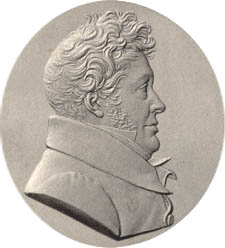
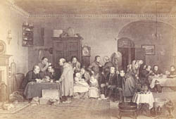

|
|
Home | Corson
Collection | Biography | Works | Image
Collection | Recent
Publications | Correspondence | Forthcoming
Events | Links | E-texts | Contact
Abraham Raimbach (1776-1843)
| Abraham Raimbach was born in London to a Swiss
father and English mother on 16 February 1776. He was educated
at Archbishop Tenison's School, then, in 1789, articled to
the engraver John Hall. Following his apprenticeship, he studied
at the Royal Academy for nine years, gaining a silver medal
for life-drawing in 1799. He supported himself while studying
by engraving small plates for Cooke's editions of the British
poets and novelists. In 1801 he engraved three plates, from
designs by Robert Smirke for the Rev. E. Forster's edition
of the Arabian Nights, the earnings from which permitted
him to visit Paris the following year (benefiting from the
Peace of Amiens) and to study the artworks gathered there by
Napoleon. On his return he collaborated again with Smirke on
illustrations for an edition of Johnson's Rasselas (1805)
and began to work extensively with Sharpe, Longman, and other
publishers. |

|
In
1812, Sir David Wilkie proposed to Raimbach that they collaborate
on a series of large plates to be engraved after paintings by Wilkie.
It is on these enormously popular and critically acclaimed works
that Raimbach's reputation primarily rests. Their first joint work
was a print of The Village Politicians (1814), a proof
of which was exhibited at the Paris Salon and awarded a gold medal.
It was followed by The Rent Day (1817, click on thumbnail,
right), The Cut Finger (1819), Blind Man's Buff (1822), The
Errand Boy (1825), Distraining for Rent (1828), The
Parish Beadle (1834), and The Spanish Mother (1836).
The collaboration with Wilkie brought Raimbach financial security.
Wilkie was godfather to one of Raimbach's sons, named David Wilkie
Raimbach in his honour, who became a portrait artist and, subsequently,
headmaster of the Birmingham School of Art. Raimbach visited Paris
again in 1824 and 1825, earning the admiration of some of France's
leading engravers. In 1835 he was elected a corresponding member
of the Institut de France. He died in Greenwich on 17 January 1843.
Raimbach only appears to have produced two
Scott-related engravings. In 1811, he engraved the 1808
portrait of Scott by Sir
Henry Raeburn. A mezzotint print
had previously been produced by Charles Turner, but Scott
judged
it 'far
inferior'
to
Raimbach's
version. Scott sent copies of the Raimbach print to friends
including John Leyden and Lady Abercorn, to whom he described
it as 'prettily engraved' (Letters, II, 450). Then,
in 1812, Raimbach engraved a plate after Richard Westall
for
Sharpe's edition of Scott's Glenfinlas, and Other Ballads,
illustrating a scene from Don
Roderick (click on thumbnail right).
For more information on Abraham Raimbach, visit the Raimbach
Family Web Site.
|
|
Bibliography
- Dictionary of National Biography (London:
Oxford University Press, 1921)
- Hunnisett, Basil. A Dictionary of British
Steel Engravers (Leigh-on-Sea: F. Lewis, 1980)
- Raimbach, Abraham. Memoirs and Recollections
of the Late Abraham Raimbach, Esq. Engraver, ed. M. T.
S. Raimbach (London: Frederick Shoberl, Junior, 1843)
- Scott, Walter, Sir. The Letters of
Sir Walter Scott , ed. H. J. C. Grierson (London:
Constable, 1932-37)
Back to Index

Last updated: 04-Mar-2005
© Edinburgh University Library
|
|